| 日付 | 2020年2月1日（土） - 2020年2月2日（日） |
|---|---|
| メンバー | 家族（妻、長女・8歳、長男・6歳） |
| アクセス | 車 |
先々週に引き続いてのスキー旅行。
年2回のスキー旅行でもう少し間隔を空けたかったが
2月は連休が多くそれを避けると、この週しか予定が空かなかった。
場所はハンターマウンテン塩原とエーデルワイススキーリゾート。
東北道でアクセスできる、比較的都心から近いスキー場だ。
1日目
駐車場には思った以上に車が停まっている。
首都圏からの日帰り圏内のため、人が集まりやすいのだろう。
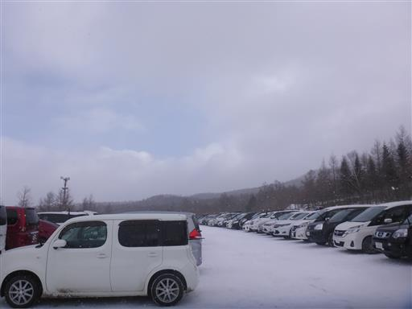
駐車場も人が多ければ、チケット売り場も人が多い。
レンタルも混雑でいろいろ待たされる。
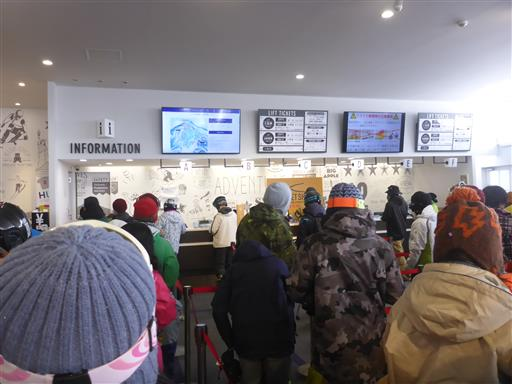
リフトも大混雑。かなり待たされる。
スキーでこれだけ待たされるのは久々だ。
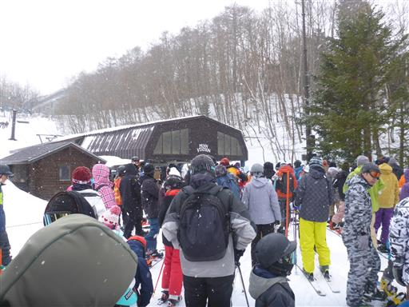
ようやくリフトに乗れる。1本目を滑ったらもう11時だ。
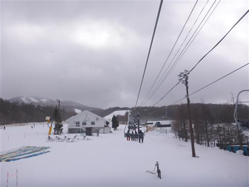
息子はスキーを始めて3年目、今年2回目のためだいぶ慣れてきた。
平坦な場所もストックですいすい進む。
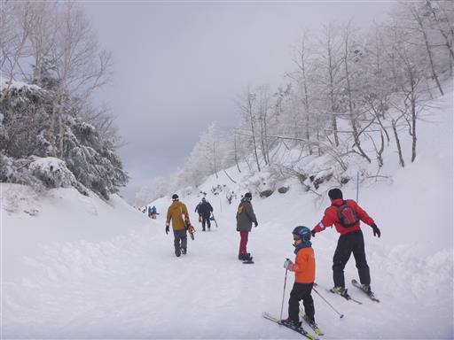
人工降雪機のあるスキー場だが、コース外にもそこそこ雪が積もっている。
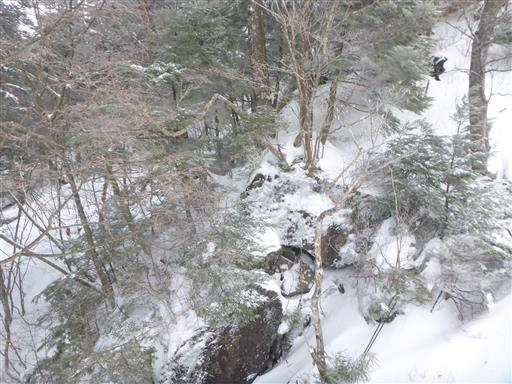
レストハウスは巨大だ。
しかし、レストランはどこも大混雑で、座る場所確保に苦労する。
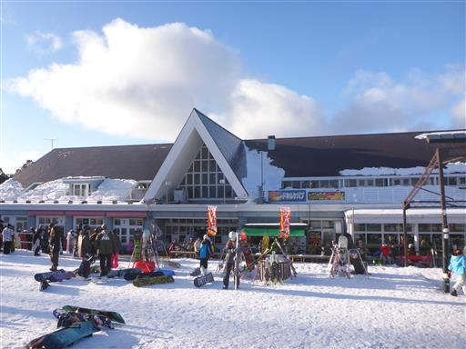
午後からは晴れてくる。キッズパークも賑わっている。
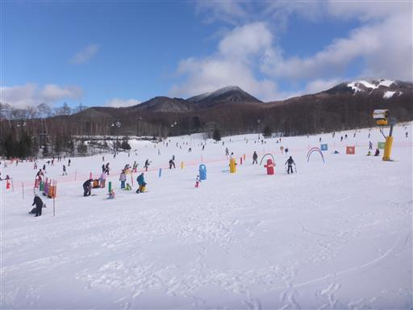
ハーフパイプ。このようなアトラクションがあるのもこのスキー場の人気の理由だろう。
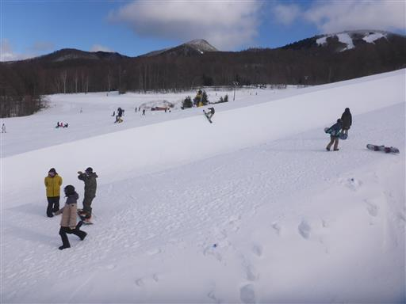
比較的近くに白く輝く山が見える。
土地勘があまりないので、見える山々の名前は全く分からない。
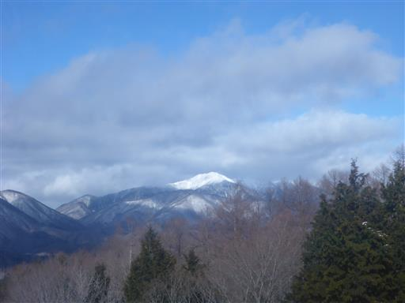
白く輝く木々。車山ほどではないが、ここでも美しい景色が広がる。
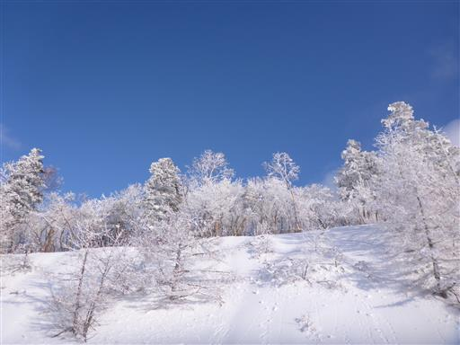
ゴンドラは比較的回転が速くて助かる。
ゴンドラ降り場からは上級者コースしかないと書かれていて、抑止力になっている。
実際は中級者レベルのコースだ。
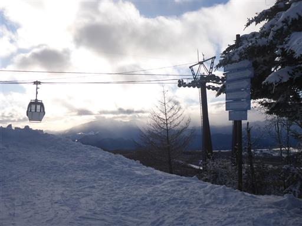
コースの上部から景色を眺める。高い場所は風が強く雪が舞っている。
コース上の雪もほとんど吹き飛ばされて氷しか残っていないのがちょっと辛い。
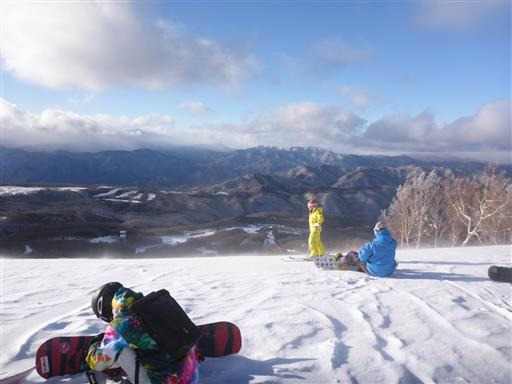
下の方は風も強くなく、雪に覆われている。

だいぶ日が傾いて来て人影が少なくなってくる。
人は多いスキー場だったが、コースがどこも広くて滑りやすかった。
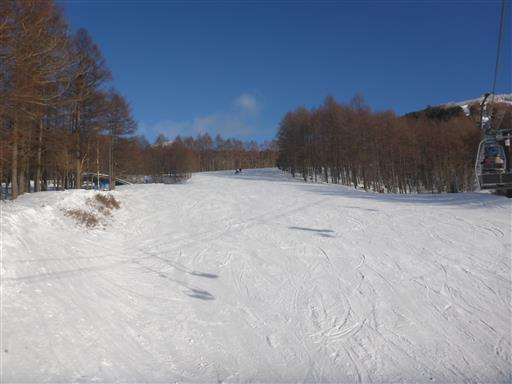
スキーを終えたらスキー場から30分ほどの場所にある塩原温泉ホテルに移動する。
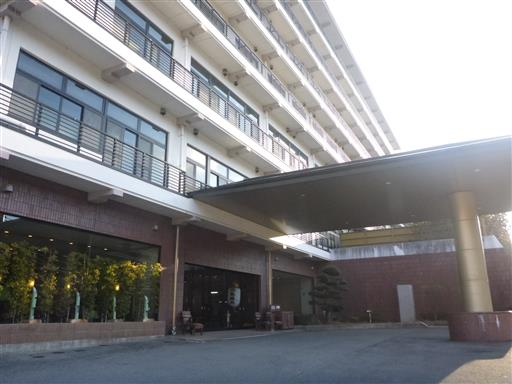
夕食はバイキング。開始時間固定の70分間。
アルコールは1杯無料だが、ビールではなく発泡酒。
安宿で、徹底的なコスト削減の努力をしている。
ホスピタリティは悪くなく、積極的にもう1度泊まりたいと思える宿ではないが、
これからも頑張ってほしい、と思える宿だった。
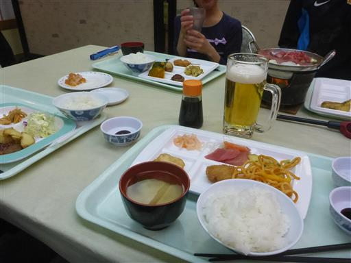